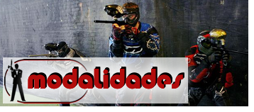

ENTRE LOS DIFERENTES MODOS DE JUEGOS ENCONTRAMOS:
Woodsball o Recball:
Se llama woodsball al paintball que se practica en zonas boscosas y permite la participación de cualquier número de jugadores con una gran variedad de tipos de búnkeres. El tamaño, la orografía y el elevado número de participantes hace que las partidas duren más tiempo que las de otras modalidades y permite una mayor diversidad de escenarios .
Scenarioball:
Se basan en una línea argumental o temática, permitiendo así la participación de una amplia gama de niveles de habilidad de los jugadores y un número incluso mayor de participantes. Estas partidas pueden durar desde unas pocas horas hasta varios días.
Speedball (bola rápida):
Es un tipo de paintball basado más en la velocidad y el movimiento adicional que las otras variantes, por lo que las partidas suelen ser más rápidas y requieren de buenos reflejos e instinto. Suele jugarse en campos planos, artificiales, bien iluminados, con colores brillantes, más pequeños y se suele carecer de camuflaje. La mayoría de los torneos actuales se juegan en esta modalidad.
Mode 10 (Modo 10):
Está basado más el en ataque sin ninguna táctica defensiva. Estas partidas son más rápidas y solo duran un par de minutos, ya que el objetivo es eliminar a los contrincantes lo más rápido posible y capturar el objetivo. Lo ideal es jugar en 2 grupos de cinco jugadores, a eso se debe el nombre que lleva.
Paintball Extremo:
Es un tipo de juego donde se intenta lograr la mayor similitud a un combate real. La duración de estos juegos extremos es de 24 a 48 horas y se desarrolla a campo abierto. Es una modalidad muy dura para los participantes, ya que cada uno tiene que llevar consigo todo el equipamiento, los víveres necesarios y un número limitado de bolas. Sólo hay un lugar seguro "zona fría", donde se encuentran las estaciones de carga de gas y/o aire.
Paintball Indoor:
Se juega en escenarios en el interior de locales, naves u otro tipo de instalaciones. Normalmente presentan simetría en su puesta en escena ya sea con obstáculos naturales o hinchables. Suelen jugar entre 3 y 15 jugadores por equipo.